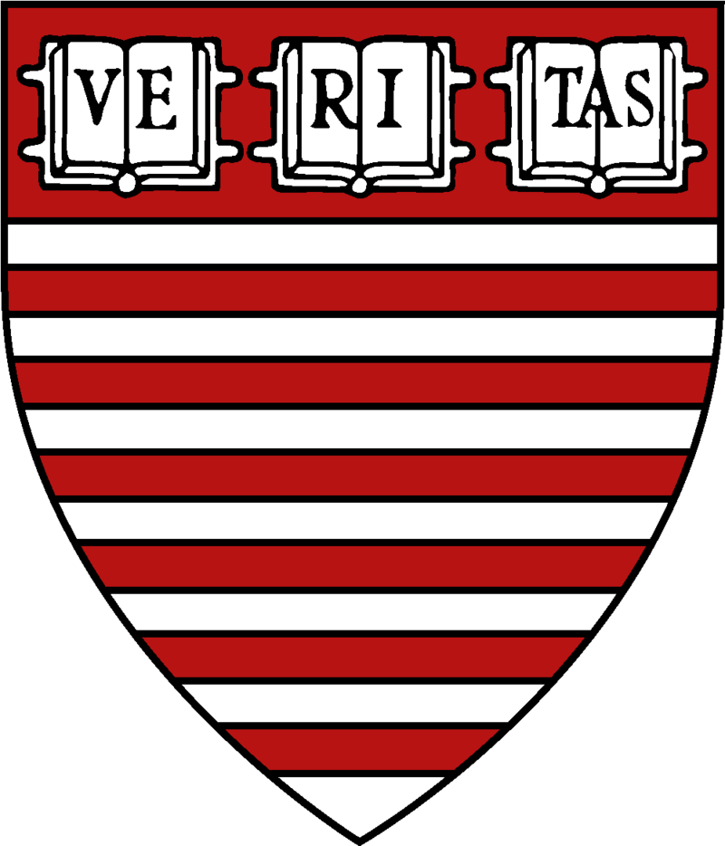
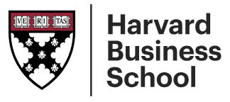

Develop the student
Natural strengths, intellectual appetite, language, argumentation, and mentor guidance become the foundation.
For ambitious Indian families
A founder-led environment for students in Grades 8 to 12 targeting Harvard, Yale, Brown, Columbia, Oxford, Cambridge, MIT, and the world's most selective universities.


The core belief
We ask what this student could become if guided properly. What are their natural strengths? Which fields, ideas, and problems could they engage with deeply? What kind of work would stand out because it is genuinely meaningful?
Natural strengths, intellectual appetite, language, argumentation, and mentor guidance become the foundation.
Academic projects, competitions, community work, and skill depth become proof rather than decoration.
Strategy, essays, recommendations, interviews, and university fit are built only after the student has substance.
Blue Ocean Profile Architecture
Proof, handled with restraint
Across the past three cycles, Blue Ocean students were admitted at rates far exceeding general applicant pools at the most selective universities.
3-year average acceptance rates across Blue Ocean students who applied. Individual results vary. Data updated annually.
Student outcomes
Blue Ocean students have earned offers from the most selective universities in the world because their work, interests, and positioning were developed long before submission week.

Brown University and Carnegie Mellon

Harvard University

Harvard University

Harvard University

Harvard MPA
Bocconi, Toronto, and Stony Brook
"The essay process was not just for the application. It changed how I understand myself. Blue Ocean helped me find what was genuinely mine to say."
Student admitted to Columbia University
Founder-led, mentor-supported

Strategic direction for every student
Founder and Strategic Director. Harvard Kennedy School alumnus and former India Country Director, Harvard Lakshmi Mittal South Asia Institute.

Harvard, MIT Sloan, and IIT Kharagpur alumnus. Author, policy strategist, and co-founder of QuBeats.

Chairperson, School of Family Business at Masters' Union. Founder of Reverentia Family Business Advisors.
Every student works with the founder and a selective mentor network from Ivy League and top-30 global universities. We stay intentionally limited because this model requires deep attention.



Right fit
Blue Ocean is for students and parents who understand that elite outcomes require time, seriousness, and personal work.
Work with us
We take on a small number of students each year. If you'd like to find out whether we're the right fit, reach out and we'll set up a conversation.